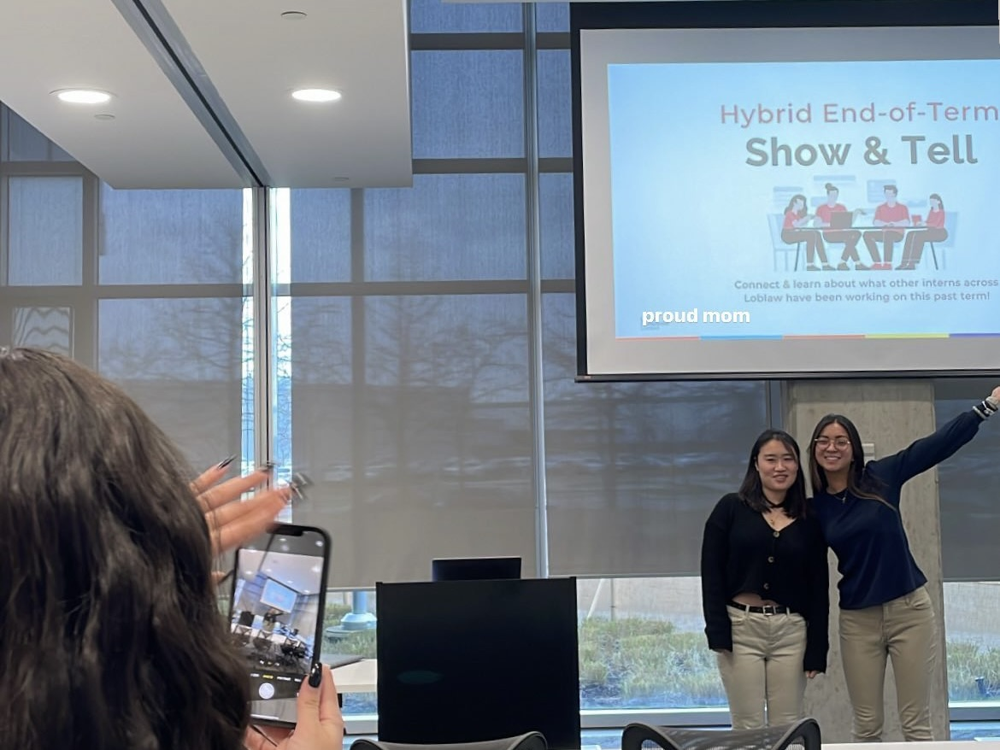
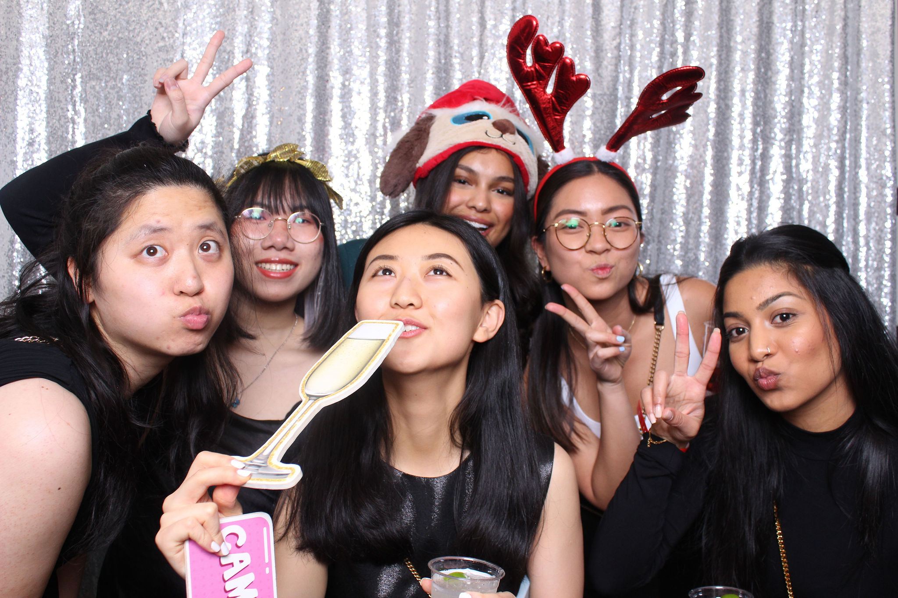
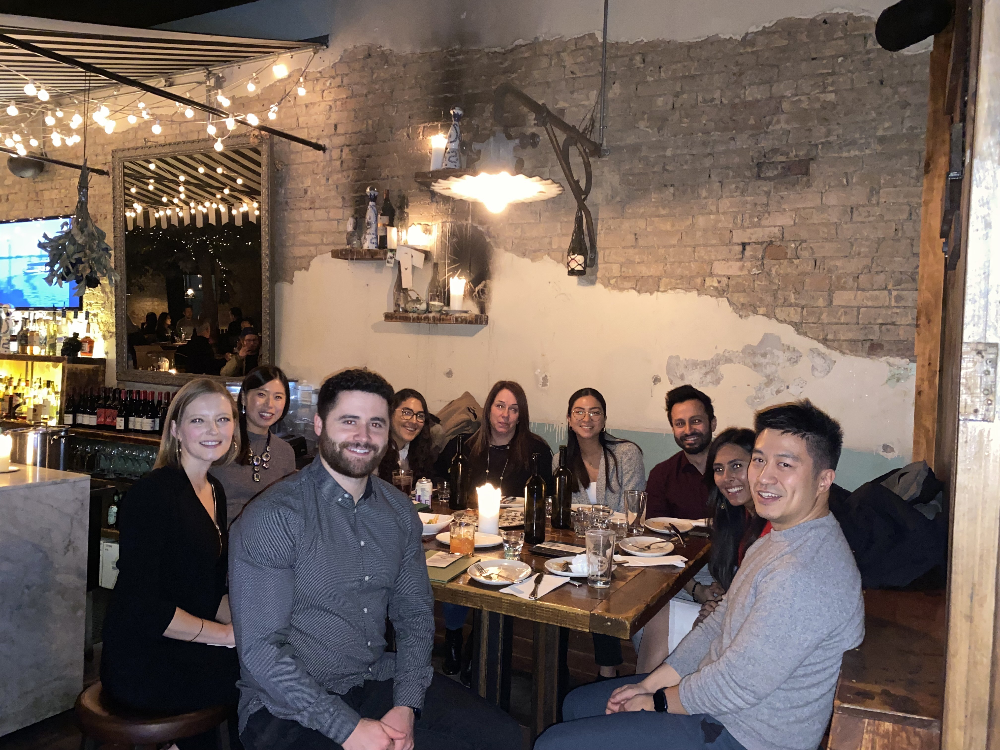

breaking
into tech
+ pm

past internships
- product management at splunk
- product marketing management at microsoft
- product strategy at applied brain research

strategy, operations & partnerships at loblaw digital
sep - dec 2022
some cool projects I led
(1) I developed a build vs. buy framework to guide and standardize how leadership, product, and engineering teams evaluate investment opportunities. (2) To increase operational efficiency and knowledge sharing, I created detailed documentation about the procurement process and key resources to be used across the organization. (3) I undertook extensive research and collaborated with executives to evaluate acquisition and partnership opportunities
a closer look into product management
Having collaborated with executives during my internship, I noticed leadership was very approachable and took this as an opportunity to learn more about the world of product. As I showed my manager that I managed my workload load well, I shared my interest in the career development opportunity of spending a couple of hours a week shadowing a product manager. By reaching out and networking, I got involved in the kick-off of a product initiative, roadmaps reviewing, design connects, and daily stand-ups.
intern committee involvement
one of my internship highlights was organizing a hybrid event with rui sun for interns across the entire Loblaw organization to share what they had worked on and get exposed to the work of others. As we did not have many in-person events, this was a great way to connect and learn from each other. we also invited the recruiting team and hiring managers to show them the excellent projects led by interns!


